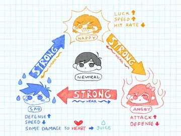

La depresión es un trastorno afectivo complejo que puede ser leve,
moderada o grave. No es una simple tristeza como muchos opinan.
El desarrollo de la depresión está influenciado por factores de riesgo de origen psicológico, biológico y social, además por un
descenso de los niveles de serotonina, al igual que la dopamina,
acelticolina y norepidefrina, que intervienen en el estado anímico.
Por tanto, los genes, la condición física y eventos de la vida
influyen para que esta enfermedad aparezca. La depresión no es juego.
Si siente tristeza, llanto sin motivos, pérdida de interés en actividades,
baja autoestima, alteración del sueño y apetito, entre otros, no lo piense más,
pues si no la trata a tiempo puede empeorar. Informe a su médico de cómo se
siente y este hará la historia clínica y exámenes de lugar.
Tenga presente que la idea suicida es común en pacientes depresivos,
y el riesgo suicida es alto si no busca solución. Conviene saber que con
tratamiento individualizado, farmacológico y otras terapias esos pensamientos
se irán, recobrando su equilibrio y alegría.
Si necesitas ayuda inmediata
Si alguien ha intentado suicidarse:
No dejes a esa persona sola.
Llama al 911 o al número local de emergencias de inmediato. O bien, si crees que puedes hacerlo de forma segura, llévala a la sala de emergencias del hospital más cercano.
Trata de averiguar si la persona está bajo los efectos de sustancias o del alcohol, o si pudo haber tomado una sobredosis.
Dile de inmediato a un familiar o amigo acerca de lo que sucede.
Si un amigo o ser querido habla o se comporta de una manera tal que te hace pensar que podría intentar suicidarse, no trates de manejar la situación por tu cuenta:

Obtén ayuda de un profesional formado lo antes posible. Podría ser necesario hospitalizar a la persona hasta que pase la crisis de suicidio.
Alienta a la persona a que llame a un número de línea directa de asistencia para el suicidio.
En los Estados Unidos, toda persona que necesite ayuda puede llamar o enviar un mensaje de texto al 988 para comunicarse con la 988 Suicide & Crisis Lifeline (Línea 988 de prevención del suicidio y crisis), disponible las 24 horas, los siete días de la semana, o utilizar el servicio de chat de Lifeline. Estos servicios son gratuitos y confidenciales.
Los veteranos de guerra y miembros del servicio militar de los Estados Unidos que sufran una crisis pueden llamar al 988 y luego presionar "1" para comunicarse con la Línea de crisis para veteranos. También pueden enviar un mensaje de texto al 838255 o chatear en línea.
La línea de ayuda Suicide & Crisis Lifeline (Línea de prevención del suicidio y crisis) de los Estados Unidos tiene una línea en español cuyo número es 1-888-628-9454 (sin costo).